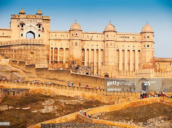
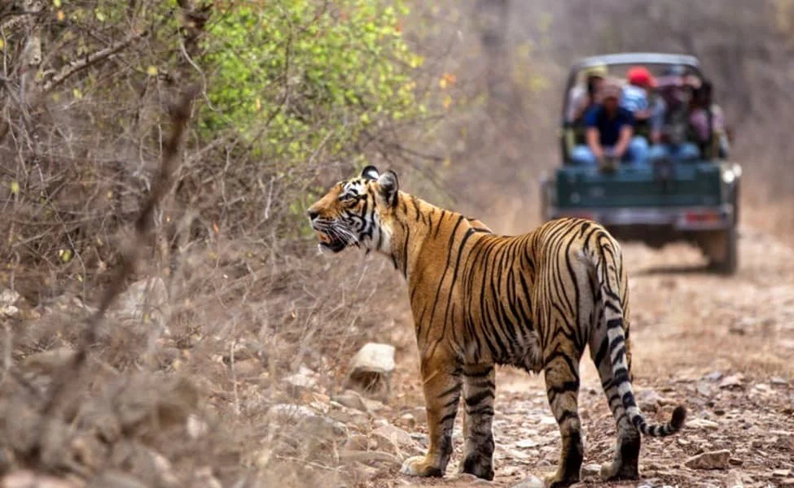
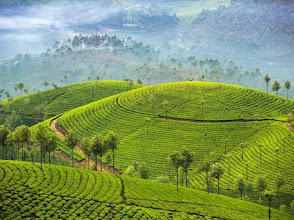
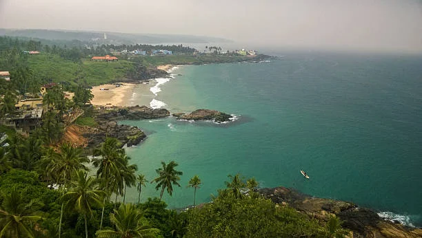
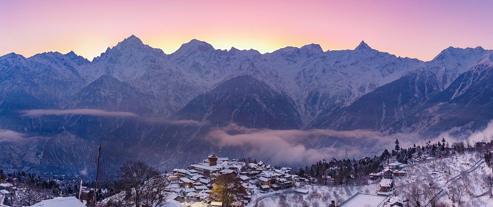
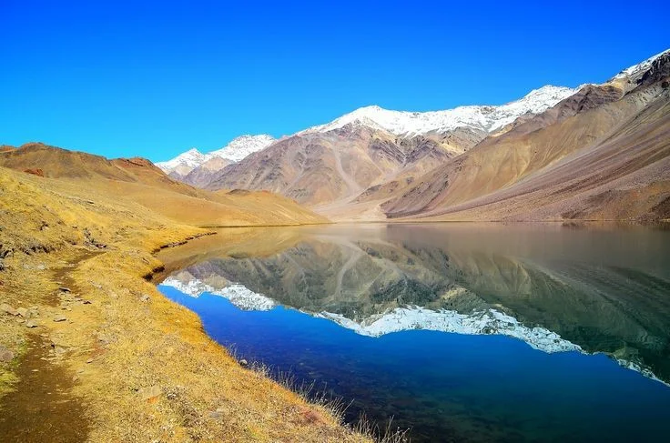

About Rajasthan The culture of Rajasthan is a vibrant tapestry of royal history, desert traditions, colorful arts, and deep-rooted hospitality defined by the motto "Atithi Devo Bhava" (Guest is God). • Highlights: Royal palaces, massive forts in Jaipur, Udaipur, Jodhpur, and camel safaris in the Thar Desert (Jaisalmer). • Best Time to Visit: October to March.know more


About Kerala The culture of Kerala is a vibrant mix of ancient Dravidian traditions, Sanskrit influences, and contributions from global traders like Arabs, Chinese, and Europeans. • Highlights: houseboats and backwaters in Alleppey, rolling tea plantations in Munnar, and lush wildlife in Thekkady. • Best Time to Visit: September to March.know more


About Himachal Pradesh Himachal Pradesh is a northern Indian state in the Western Himalayas known as the "Land of Gods" (Dev Bhoomi) and famous for its dramatic mountain peaks, deep river gorges, and rich cultural heritage • Highlights: Snow-capped Himalayan peaks, hill stations like Shimla and Manali, and offbeat trekking routes in Spiti Valley. • Best Time to Visit: March to June (for cool weather) or October to February (for snow).know more